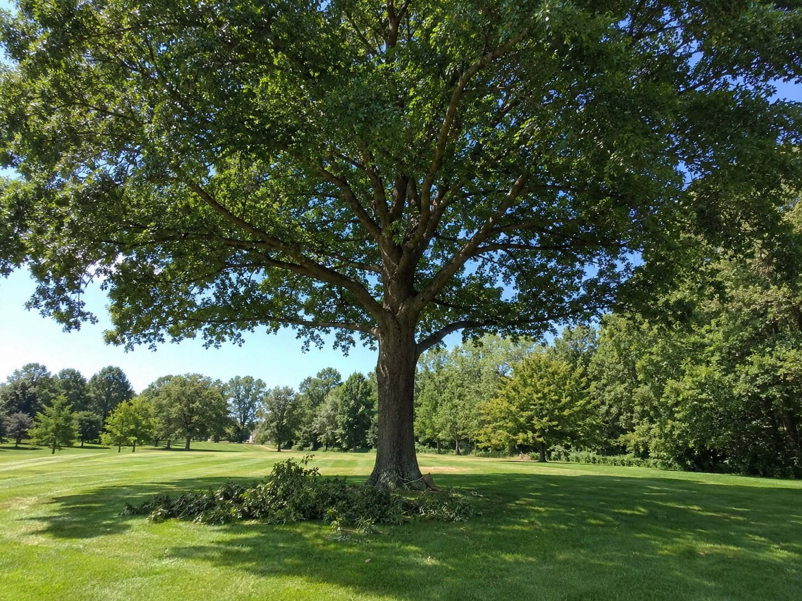
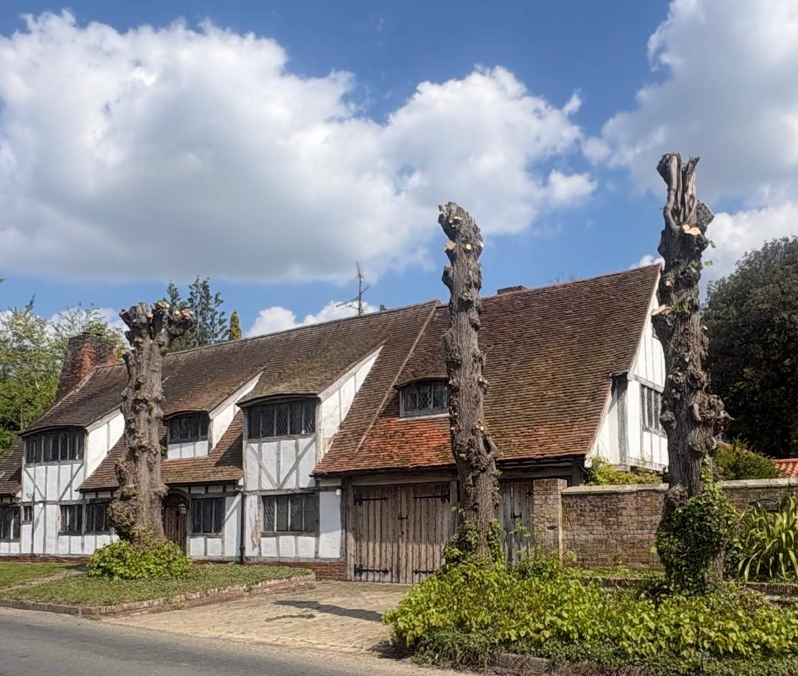
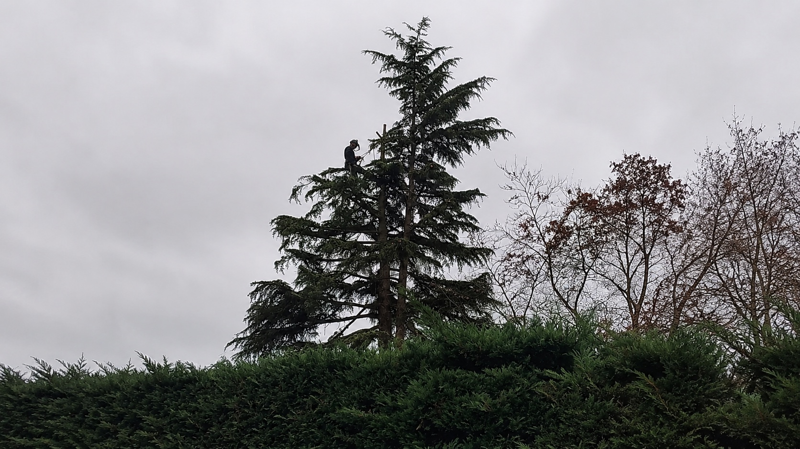

Tree Surgeon
in Clare, Suffolk.
Professional tree care for Clare's historic centre, established gardens and Stour Valley edges. Fully insured, NPTC-qualified and equipped for careful pruning, controlled removals and 24/7 storm response.
A wooded town
with history at every turn
Clare sits in a green hollow beside the River Stour, with the castle earthworks, country park and former railway landscape immediately south of its historic centre. Mature trees are part of that character: they frame long views, soften old boundaries and connect gardens with the surrounding valley.
The same setting makes tree work unusually sensitive. Clare's medieval street pattern survives around Market Hill, with dense frontages, small lanes and tight corners leading towards Bridewell Street, Cavendish Road, Nethergate Street and the High Street. Rear gardens can be hard to reach, while branches may sit above tiled roofs, old walls, parked cars or neighbouring plots.
Clare Conservation Area was designated in 1974 and covers an exceptionally rich historic environment. For qualifying trees, West Suffolk Council normally requires six weeks' written notice before work unless a separate TPO process applies. We check the position, agree a suitable specification and make sure the paperwork is dealt with before protected work starts.

Tree care shaped
around the setting
Practical options for small historic plots, substantial valley gardens and rural properties around Clare.
Tree Felling & Removal
Piece-by-piece dismantling where a straight fell is not possible, protecting roofs, walls, planting and neighbouring property.
Learn moreCrown Reduction & Thinning
Proportionate reductions for spreading garden trees, retaining character while managing clearance, leverage and light.
Learn morePollarding
Planned repeat management for established pollards, returning to suitable points and keeping regrowth predictable.
Learn moreDead-Wooding & Pruning
Removing dead, damaged or rubbing wood from mature crowns above paths, drives, public-facing boundaries and garden seating.
Learn moreStump Grinding
Stumps ground below the intended finish so restricted garden space can be replanted, turfed or returned to use.
Learn moreEmergency & Storm Response
Rapid help for newly fallen trees, split unions and hanging limbs across Clare and the exposed Stour Valley approaches.
Learn moreCrown Lifting
Selective lower-branch removal to restore clearance above access routes without unnecessarily reducing the whole crown.
Learn moreSite Clearance
Coordinated vegetation and tree clearance for landscape renewal, access improvements and carefully planned development.
Learn moreHedge Cutting
Precise trimming, height reduction and restoration for formal hedges, boundary screening and overgrown garden hedging.
Learn more
Two very different
kinds of access
Clare changes quickly from compact historic streets to open valley edges. A workable plan accounts for both:
-
Protected trees requiring a TPO check or six weeks' notice to West Suffolk Council
-
Rear gardens reached through narrow passages, gateways and medieval street corners
-
Trees close to historic fabric, old boundary walls and densely arranged neighbouring properties
-
Moisture, wind exposure and heavy crowns along the Stour Valley and rural approaches
-
Longer gardens and field-edge trees where machinery access, habitat and ground conditions all matter
Following the Stour
beyond Clare
We cover the villages and rural properties around Clare on both sides of the Suffolk–Essex border, including:
- Cavendish
- Stoke-by-Clare
- Hundon
- Poslingford
- Wixoe
- Ashen
- Pentlow
- + nearby areas
Don't see your village listed? It doesn't mean we don't cover it — these are just the ones we're in most often. The quickest way to check is to call. You can also see our full coverage area across North Essex and Suffolk.

Tree surgery in Clare,
questions answered
Practical answers on Clare's conservation area, difficult access, TPOs, emergency work and pricing.
Can you carry out tree work in Clare Conservation Area?
Yes. Clare has a large conservation area, designated in 1974. For qualifying trees that are not already covered by a TPO, West Suffolk Council normally requires six weeks' written notice before work. We check the status and help prepare the information needed.
Can you work around Clare's tight streets and enclosed gardens?
Yes. Clare's medieval street pattern leaves many properties with narrow passages, tight corners and limited drop zones. We inspect access first and can use controlled sectional dismantling and rigging where branches cannot be lowered freely.
Do you cover the villages around Clare too?
Yes. We cover Cavendish, Stoke-by-Clare, Hundon, Poslingford, Wixoe, Ashen, Pentlow and the smaller settlements around the Suffolk and Essex border. Call if you would like us to confirm your postcode.
Will you need to check for a Tree Preservation Order (TPO)?
We check both conservation-area status and individual Tree Preservation Orders before protected work begins. A TPO requires formal consent, while qualifying non-TPO trees in the conservation area usually require six weeks' notice to West Suffolk Council.
Do you offer emergency tree work across Clare and the Stour Valley?
Yes. We provide 24/7 storm and emergency response for fallen trees, hanging branches and sudden hazards across Clare and nearby Stour Valley villages. Keep clear of the tree and any affected road, roof or power line while calling us.
How much does tree surgery cost in Clare?
Cost depends on the tree, access, nearby structures, the work specification, rigging needs and waste handling. We visit the property free of charge and provide a clear written quote before anything is booked.
See everywhere
we cover
Clare sits at the heart of our Stour Valley coverage, between Sudbury, Haverhill and the surrounding border villages.
View Our Full Coverage Area